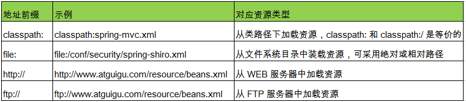

泛型依赖注入 Spring 4.x 中可以为子类注入子类对应的泛型类型的成员变量的引用
示例:
新建beans-generic.di.xml,新建com.generic.di包,包下面新建6个类，分别是Main.java,User.java,BaseService.java,BaseRepository.java,UserService.java,UserRepository.java
beans-generic.di.xml:1
<context:component-scan base-package="com.generic.di"></context:component-scan>
BaseService.java:1
2
3
4
5
6
7
8
9
10
package com.generic.di;
import org.springframework.beans.factory.annotation.Autowired;
public class BaseService<T> {
@Autowired
protected BaseRepository<T> baseRepository;
public void add() {
System.out.println("add...");
System.out.println(baseRepository);
}
}
BaseRepository.java:1
public class BaseRepository<T> {}
User.java:1
public class BaseRepository<T> {}
UserService.java:1
2
3
import org.springframework.stereotype.Service;
@Service
public class UserService extends BaseService<User>{}
UserRepository.java:1
2
3
4
import org.springframework.stereotype.Repository;
@Repository
public class UserRepository extends BaseRepository<User>{
}
Main.java:1
2
3
4
5
public static void main(String[] args) {
ApplicationContext ctx = new ClassPathXmlApplicationContext("beans-generic.di.xml");
UserService userService = (UserService)ctx.getBean("userService");
userService.add();
}
整合多个配置文件
Spring 允许通过 <import> 将多个配置文件引入到一个文件中，进行配置文件的集成。这样在启动 Spring 容器时，仅需要指定这个合并好的配置文件就可以。
